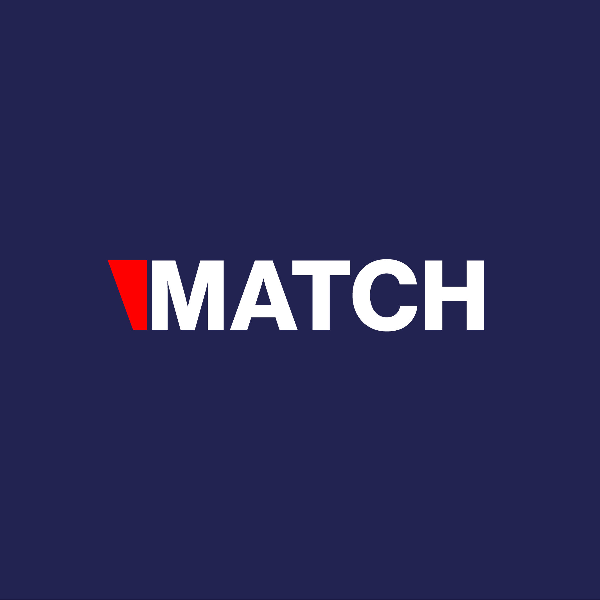

Noticed
Ticket donations are already live
Map every ticket donation to cause, partner, event, and owner. Then make one export the Foundation team can trust.
Prepared for Flávio Figueiredo
Saw SiGMA is hiring a Director of Partnerships & Operations for the Foundation. That role will need clean workflows across partners, ticket donations, events, and follow-up.
This is a short brief on where SiGMA Match and the Foundation flow can support that leader from day one.

The hiring signal says the Foundation is moving from founder-led effort to repeatable operations. SiGMA Match already handles meetings, QR exchange, event updates, agendas, exhibitors, and attendee profiles. The Foundation also links ticket purchases to chosen causes, then publishes donation activity. The bottleneck is likely the handoff between Match, tickets, CRM, and partner follow-up. If that stays manual, the new director inherits reports, exports, and status checks instead of a clear operating system.
Map every ticket donation to cause, partner, event, and owner. Then make one export the Foundation team can trust.
Turn meetings, QR scans, and connection requests into a post-event queue with owner, status, and next action.
Workflow mapTrace ticket purchase, cause choice, partner owner, donation record, and CRM status into one shared data view.
Foundation pilotShip a small operations board for projects, partners, donations, documents, approvals, and follow-up tasks.
Match handoffConnect meeting requests, QR scans, and event profiles to a simple post-event action queue.
Event readinessAdd mobile checks for login, schedule, push, map, QR scan, and badge flows before peak traffic.

Elinext built a mobile-friendly event portal and kept improving the LiveSV ecosystem after launch.
Read case study
Elinext built a browser-based CRM for deals, invoices, contact history, payments, and team activity.
Read case studyWe can map the first sprint around your current stack.
Start the conversation